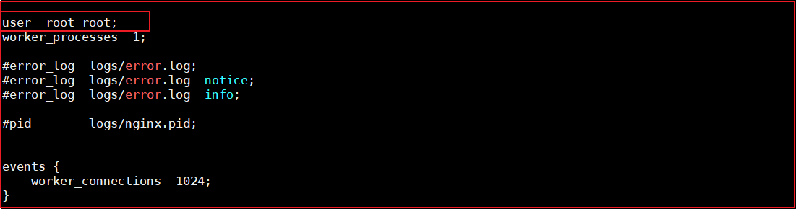
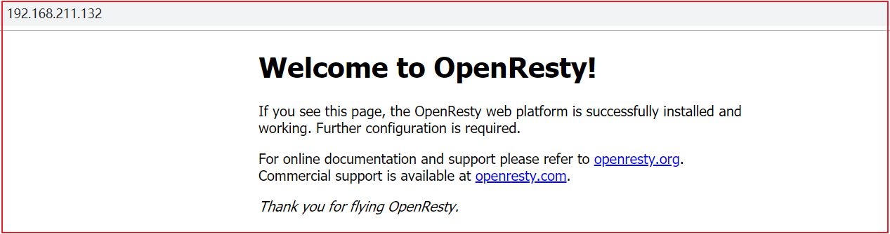
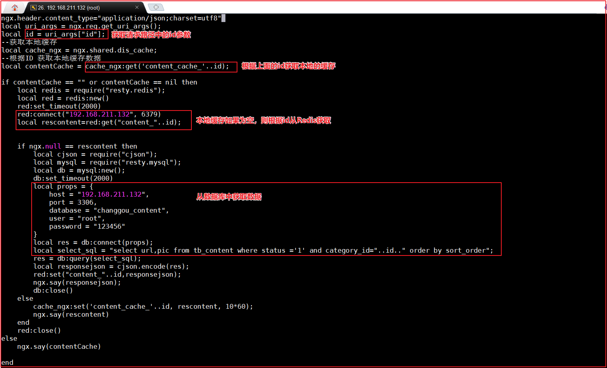
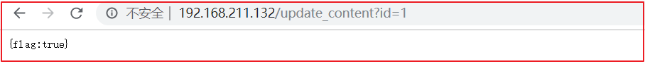

OpenResty
OpenResty介绍
OpenResty(又称：ngx_openresty) 是一个基于 nginx的可伸缩的 Web 平台，由中国人章亦春发起，提供了很多高质量的第三方模块。
OpenResty 是一个强大的 Web 应用服务器，Web 开发人员可以使用 Lua 脚本语言调动 Nginx 支持的各种 C 以及 Lua 模块,更主要的是在性能方面，OpenResty可以 快速构造出足以胜任 10K 以上并发连接响应的超高性能 Web 应用系统。
360，UPYUN，阿里云，新浪，腾讯网，去哪儿网，酷狗音乐等都是 OpenResty 的深度用户。
OpenResty 简单理解成 就相当于封装了nginx,并且集成了LUA脚本，开发人员只需要简单的其提供了模块就可以实现相关的逻辑，而不再像之前，还需要在nginx中自己编写lua的脚本，再进行调用了。
安装openresty
linux安装openresty:
1.添加仓库执行命令
1 | yum install yum-utils |
2.执行安装
1 | yum install openresty |
3.安装成功后 会在默认的目录如下：
1 | /usr/local/openresty |
安装nginx
默认已经安装好了nginx,在目录：/usr/local/openresty/nginx 下。
修改/usr/local/openresty/nginx/conf/nginx.conf,将配置文件使用的根设置为root,目的就是将来要使用lua脚本的时候 ，直接可以加载在root下的lua脚本。
1 | cd /usr/local/openresty/nginx/conf |
修改代码如下：

测试访问
重启下centos虚拟机，然后访问测试Nginx
访问地址：http://192.168.211.132/

配置开机自启动：
方式一：在/etc/rc.local中配置
可以将此命令加入到rc.local文件中，这样开机的时候nginx就默认启动了
vi /etc/rc.local
加入一行 /etc/init.d/nginx start 保存并退出，下次重启会生效。
方式二：将nginx配置成自启动的服务
1.添加至服务管理列表，并让其开机自动启动
[root@nginx ~]# chkconfig –add nginx
[root@nginx ~]# chkconfig nginx on
[root@nginx ~]# chkconfig nginx –list
nginx 0:关闭 1:关闭 2:启用 3:启用 4:启用 5:启用 6:关闭
2、nginx启动、停止、无间断服务重启
[root@example ~]# service nginx start
[root@example ~]# service nginx stop
[root@example ~]# service nginx reload
3.查看一下端口
[root@nginx ~]# netstat -ntlp | grep :80
tcp 0 0 0.0.0.0:80 0.0.0.0:* LISTEN 3889/nginx
对于其他服务也同样适用，比如Mysql,php-fpm等等
广告缓存的载入与读取
需求分析
需要在页面上显示广告的信息。
Lua+Nginx配置
(1)实现思路-查询数据放入redis中
实现思路：
定义请求：用于查询数据库中的数据更新到redis中。
a.连接mysql ，按照广告分类ID读取广告列表，转换为json字符串。
b.连接redis，将广告列表json字符串存入redis 。
定义请求：
1 | 请求： |
请求地址：<http://192.168.211.132/update_content?id=1>
创建/root/lua目录，在该目录下创建update_content.lua： 目的就是连接mysql 查询数据 并存储到redis中。

上图代码如下：
1 | ngx.header.content_type="application/json;charset=utf8" |
修改/usr/local/openresty/nginx/conf/nginx.conf文件： 添加头信息，和 location信息

代码如下：
1 | server { |
定义lua缓存命名空间，修改nginx.conf，添加如下代码即可：

代码如下：
1 | lua_shared_dict dis_cache 128m; |
请求<http://192.168.211.132/update_content?id=1>可以实现缓存的添加

(2)实现思路-从redis中获取数据
实现思路：
定义请求，用户根据广告分类的ID 获取广告的列表。通过lua脚本直接从redis中获取数据即可。
定义请求：
1 | 请求:/read_content |
在/root/lua目录下创建read_content.lua:
1 | --设置响应头类型 |
在/usr/local/openresty/nginx/conf/nginx.conf中配置如下：
如图：

代码：
1 | location /read_content { |
(3)加入openresty本地缓存
如上的方式没有问题，但是如果请求都到redis，redis压力也很大，所以我们一般采用多级缓存的方式来减少下游系统的服务压力。参考基本思路图的实现。
先查询openresty本地缓存 如果 没有
再查询redis中的数据，如果没有
再查询mysql中的数据，但凡有数据 则返回即可。
修改read_content.lua文件，代码如下：

上图代码如下：
1 | ngx.header.content_type="application/json;charset=utf8" |
测试地址：http://192.168.211.132/update_content?id=1
此时会将分类ID=1的所有广告查询出来，并存入到Redis缓存。

测试地址：http://192.168.211.132/read_content?id=1
此时会获取分类ID=1的所有广告信息。